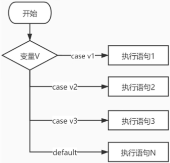
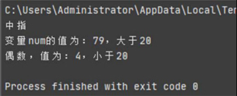
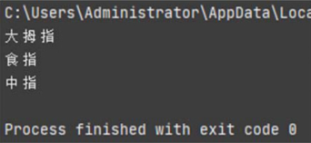

首页 > 编程笔记
Go语言switch case语句的用法
在Go语言中，多条件分支是由 switch case 语句实现的，它根据某个变量值进行条件选择，并执行相应代码。下图是 switch case 语句的执行过程。
从图2了解到 switch case 语句的具体执行过程，它根据某个变量值进行选择，case 语句是设置变量的区间值，只要变量符合其中某个 case 的区间值，程序就会自动执行相应的代码，如果所有 case 的区间值都不符合，则执行 default 的代码。
switch case 语句的语法格式如下：
程序在执行 switch 语句的时候，case 语句都是从上至下按顺序执行的，所以每个 case 的判断条件建议不要重合，不然很容易造成逻辑上的混乱。
根据 switch 的语法格式分别列举应用例子，代码如下：
运行上述代码，运行结果如图3所示。
默认情况下，当程序执行了某个 case 语句之后，它不再往下执行其他 case 语句，若想程序继续执行下一个 case 语句，可以在 case 语句中加入关键字 fallthrough，示例如下：
从运行结果看到，程序首先执行 case 1 的代码，由于 case 1 的代码设置了关键字 fallthrough，程序继续执行 case 2 的代码；case 2 的代码也设置了关键字 fallthrough，所以程序继续执行 case 3 的代码，以此类推，直到执行关键字 default 的代码为止。
上述代码的 case 3 没有写入关键字 fallthrough，所以执行完 case 3 的代码后，程序就跳出整个 switch 语句。

图2：switch case 语句的执行过程
图2：switch case 语句的执行过程
从图2了解到 switch case 语句的具体执行过程，它根据某个变量值进行选择，case 语句是设置变量的区间值，只要变量符合其中某个 case 的区间值，程序就会自动执行相应的代码，如果所有 case 的区间值都不符合，则执行 default 的代码。
switch case 语句的语法格式如下：
switch 变量 {
case 值1:
执行语句1
case 值2:
执行语句2
default:
执行语句N
}
switch {
case 变量的条件判断1:
执行语句1
case 变量的条件判断2:
执行语句2
default:
执行语句N
}
switch 定义变量; 变量{
case 变量的条件判断1:
执行语句1
case 变量的条件判断2:
执行语句2
default:
执行语句N
}
switch case 语句的语法格式说明如下：
-
关键字 switch 后面可根据需要决定是否设置变量，并且末端必须加上中括号
{}，中括号里面是执行关键字 case 的分支条件。 - 一个 switch 语句中可以设有多个关键字 case，但只有一个关键字 default。
- 关键字 case 是设置变量的判断条件，若符合条件，则运行 case 的执行语句，执行完毕后直接跳出整个 switch 语句，不再往下执行。
程序在执行 switch 语句的时候，case 语句都是从上至下按顺序执行的，所以每个 case 的判断条件建议不要重合，不然很容易造成逻辑上的混乱。
根据 switch 的语法格式分别列举应用例子，代码如下：
package main
import (
"fmt"
"math/rand"
"time"
)
func main() {
// 使用方法1
finger := 3
switch finger {
// 当变量finger=1的时候
case 1:
fmt.Println("大拇指")
// 当变量finger=2的时候
case 2:
fmt.Println("食指")
// 当变量finger=3的时候
case 3:
fmt.Println("中指")
case 4:
fmt.Println("无名指")
case 5:
fmt.Println("小拇指")
default:
fmt.Println("无效的输入！")
}
// 使用方法2
rand.Seed(time.Now().Unix())
num := rand.Intn(100)
switch {
// 判断num是否大于20
case num < 20:
fmt.Printf("变量num的值为：%v，小于20\n", num)
default:
fmt.Printf("变量num的值为：%v，大于20\n", num)
}
// 使用方法3
rand.Seed(time.Now().Unix())
switch n := rand.Intn(9); n {
// 变量n在（1, 3, 5, 7, 9）区间内
case 1, 3, 5, 7, 9:
fmt.Printf("奇数，值为：%v，小于20\n", n)
// 变量n在（2, 4, 6, 8）区间内
case 2, 4, 6, 8:
fmt.Printf("偶数，值为：%v，小于20\n", n)
default:
fmt.Printf("啥也不是")
}
}
上述代码列举了 switch case 语句的3种使用方式，虽然在语法格式上存在细微差异，但整体上没有太大差异，总的来说：
- 如果关键字 switch 后面设有变量，关键字 case 只需设置变量的区间值；
- 如果关键字switch后面没有设置变量，关键字case必须对变量进行条件判断。
运行上述代码，运行结果如图3所示。

图3：示例1运行结果
图3：示例1运行结果
默认情况下，当程序执行了某个 case 语句之后，它不再往下执行其他 case 语句，若想程序继续执行下一个 case 语句，可以在 case 语句中加入关键字 fallthrough，示例如下：
package main
import "fmt"
func main() {
finger := 1
switch finger {
// 当变量finger=1的时候
case 1:
fmt.Println("大拇指")
fallthrough
// 当变量finger=2的时候
case 2:
fmt.Println("食指")
fallthrough
// 当变量finger=3的时候
case 3:
fmt.Println("中指")
case 4:
fmt.Println("无名指")
case 5:
fmt.Println("小拇指")
default:
fmt.Println("无效的输入！")
}
}
运行上述代码，运行结果如图4所示。

图4：示例2运行结果
图4：示例2运行结果
从运行结果看到，程序首先执行 case 1 的代码，由于 case 1 的代码设置了关键字 fallthrough，程序继续执行 case 2 的代码；case 2 的代码也设置了关键字 fallthrough，所以程序继续执行 case 3 的代码，以此类推，直到执行关键字 default 的代码为止。
上述代码的 case 3 没有写入关键字 fallthrough，所以执行完 case 3 的代码后，程序就跳出整个 switch 语句。
关注公众号「站长严长生」，在手机上阅读所有教程，随时随地都能学习。内含一款搜索神器，免费下载全网书籍和视频。

微信扫码关注公众号